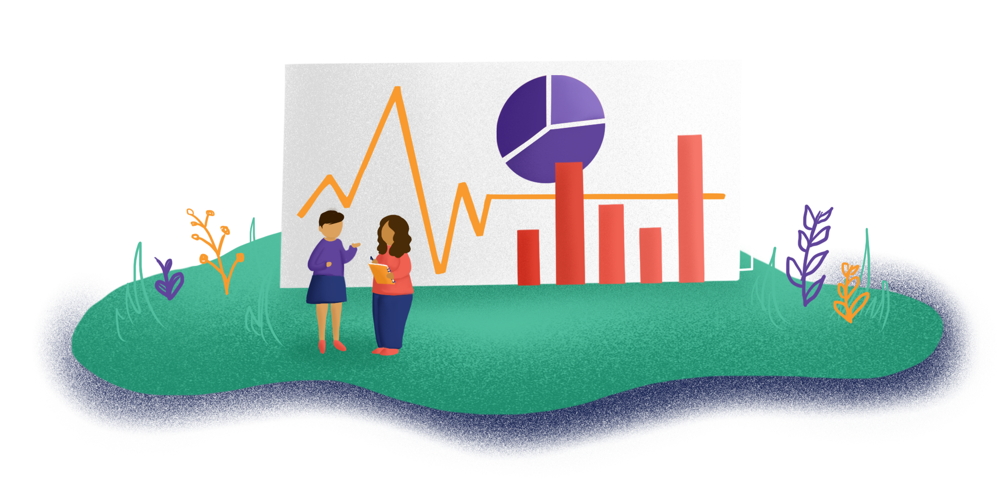

06
It's time to go out and do your research! In Stepping Stone 6 you will finalize your research plan and collect data.

download
26 page PDF | 13.7 MB

Time Commitment:
1-3 training sessions, 2-5 weeks of data collection
1.
Use the following tools:
Consent Form Template (getting permission to collect information from people)
Organizing Your Data Collection Effort (getting ready to do your research)
Task Charts for Interviews, Focus Groups and Surveys (creating your research schedule and dividing up tasks)
2.

Do this:
Support Meeting Sample Agenda (holding team check-ins)
3.
Interviews
Interview Checklist (identifying steps to take
before and after an interview)
Interviewee I.D. Chart (organizing and storing your data)
Interview Immediate Thoughts Worksheet (capturing first impressions about what you heard)
Focus Groups
Focus Group Recruitment Talking Points (getting people to join your focus groups)
Focus Group Checklist (identifying steps to take before and after a focus group)
Get Out There: Focus Groups! (conducting your focus group)
Focus Group Immediate Thoughts Worksheet (capturing first impressions about what you heard)
Surveys
Considerations When Using Online
Survey Tools (thinking about how you will conduct your
survey)
download